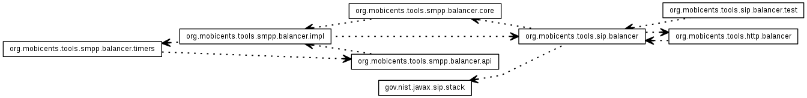

JavaScript is disabled on your browser.
Overview
Package
Class
Use
Tree
Deprecated
Index
Help
Prev
Next
Frames
No Frames
All Classes
Restcomm Converged Load Balancer Jar 2.0.0-SNAPSHOT API
Load balancing is a technique of distributing work load across set of machines(cluster in general).
See:
Description

Packages
Package
Description
gov.nist.javax.sip.stack
org.mobicents.tools.http.balancer
org.mobicents.tools.sip.balancer
org.mobicents.tools.sip.balancer.test
org.mobicents.tools.smpp.balancer.api
org.mobicents.tools.smpp.balancer.core
org.mobicents.tools.smpp.balancer.impl
org.mobicents.tools.smpp.balancer.timers
Overview
Package
Class
Use
Tree
Deprecated
Index
Help
Prev
Next
Frames
No Frames
All Classes
Copyright © 2016. All Rights Reserved.